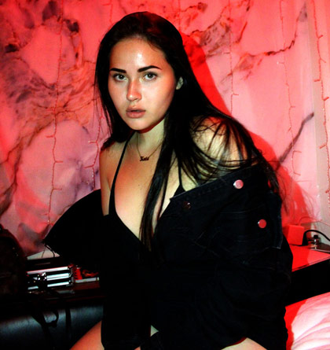
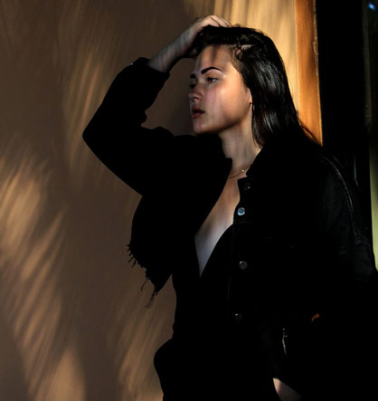
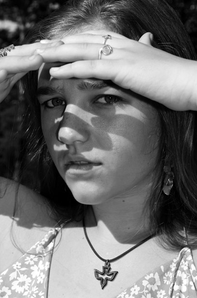
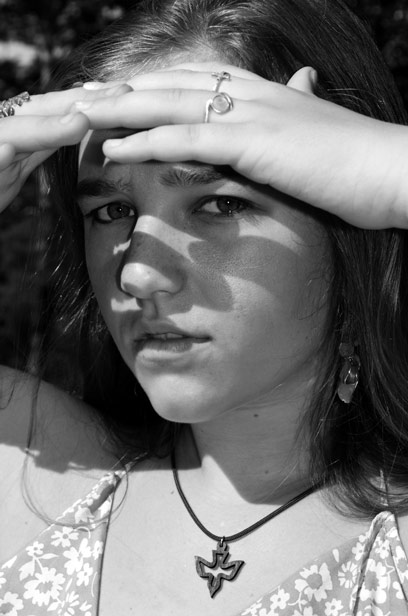

The perfect shot
Capturing moments in my life had always been a hobby of mine, but it soon turned into a passion of capturing stories. Whether it be stories of the earth through nature photography to stories of people's lives through paid materinity or engegement shoots, I love putting smiles on people's faces as they are reminded by moments of joy. At the same time, I am also passionate about capturing moments that may not be so joyful in order to spread an important message. Overall, I see photpgraphy as one of the ultimate forms of expression. After all, they do say a picture is worth a thousand words.
Portraits
  
